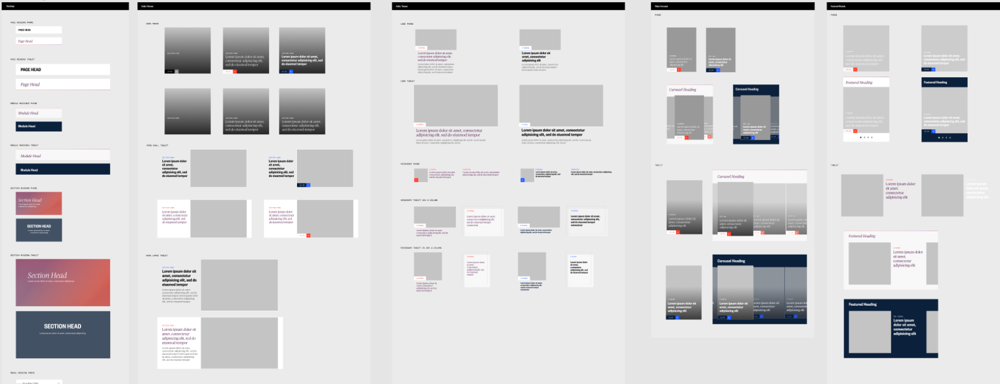
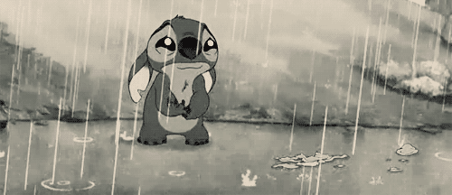

Persuading pixels to achieve their maximum potentialRésumé
Experience
TODAY & NBC News Digital
Sr. UX Designer
Latest projects:
Design System and Motion Library
A redesign of the NBC News app injunction with the redesign of NBCNews.com and creation of a new design system we call Bento. You can read about it's beginnings here, and how it's larger than just a visual design system. This work includes but isn't limited to:
Establishing continuity across devices.
A button here performs the same across web, apps and OTT for consistency across products.
<<<<<<< HEAD
Providing developers a place to reference atomic information keeps designers efficient, and avoids creating redundant or conflicting information.
=======
Providing developers a place to reference atomic information keeps designers efficient, and avoids creating redundant information.
>>>>>>> parent of dfcf1c0... Intro and Bento edits
A concept similar to DRY coding method. Avoid repetitive documentation, because every time we repeat, we open the door to inconsistencies. We moved all comps and final designs to Figma. This provides a single source of truth for every component we build as well as a comp that is always up-to-date for stakeholder review.

Dev-ready module blocks.
Incorporate the Bento aesthetic to components & moveable modules.
A common language for design and dev to use to build and enhance future projects. Make it easy and efficient for design to quickly prototype new solutions without a need to recreate the wheel.
A few basic blocks of the system.Documentation of logic surrounding the display of metadata.
Create a motion library to maintain clean, simple and concise animations
Using AfterEffects I'm cataloging our use of motion to emphasize hierarchy, implement predictive interaction patterns, establish permanent spatial awareness, and encourage user exploration. Our library will also reinforce the tenor and personality that will span across across devices and across very different brands with minimum modifications.
TODAY & NBC News App Redesign
TODAY Show app: iOS launch in February 2019 (with continued updates)
<<<<<<< HEAD
The TODAY Show app relaunch began as a proof of concept in September 2018 to see just how quickly our templating system could be implemented. We limited the scope to iOS. Within a couple of days we had the TODAY app content successfully rendering in our POC. Small changes to type, font, color and imagery to give the app a fresh look with a familiar foundation. Further improvements and more user testing is elevating refinement of the interface.
=======
The TODAY Show app relaunch began as a proof of concept in September 2018 to see just how quickly our templating system could be implemented. We limited the scope to iOS. Within a couple of days we had the TODAY app content successfully rendering in our POC. Small changes to type, font, color and imagery to give the app an fresh look with a familiar foundation. Further improvements and more user testing is elevating refinement of the interface.
>>>>>>> parent of dfcf1c0... Intro and Bento edits
Testing the hypothesis, even the ones we truly believed to be rock solid.
Nothing is more humbling or eye-opening than listening to user feedback.
Provide easy-to-access videos and sections.
The majority of users come to the app and sites to view or get additional information on content they have seen on the TODAY Show broadcast.
Reflect the Bento design aesthetic while staying true to the TODAY Show aesthetic.
Our design system and development structure allowed for us to spin up and entirely new iOS app in a matter of months.
Open future opportunities for TODAY app ecommerce. Show viewers and app users are among our most loyal. User research showed us our users are eager to see what TODAY editorial and TODAY Show programming have tested and given their stamp-of-approval to.
Always be committing! Always be looking for more ways to refine the UX. Continually look for ways to elevate the TODAY Show and NBC News apps in order to differentiate them from other news providers.
A good idea can come from anywhere. The developers are skeptical of a proposed solution. The stakeholders point out a missed opportunity. My mom doesn't know how to stop video. I'm eager to hear it. All these are valid sources, design shouldn't live in a vacuum.
NBC News app, launched 2018 (with continued updates) iOS | Android
Before jumping into a new design language and overhaul we asked why have an app at all? What will it bring that mobile web doesn't provide?
Live audio
The single biggest feature request among all our platforms is for live streaming video. Live audio provides immediate and reliable streaming (some say a better way to consume on mobile than video) that is exceeding our expectations for user satisfaction.
Deliver a video-centric experience.
It's now a solid and speedy viewing experience, positioned to provide a future home for live streaming.
Allow new verticals to ramp up quickly. We made this an app to scale. More sections can be added, more verticals can be promoted, and the latest long or short-form special can be emphasised in a very modular workspace. To prove it we launched a completely brand new TODAY iOS app with an entirely different aesthetic, and completely different demographic in a matter of months.
NBC News channel on Roku
The NBC News Roku channel is an awesome example of straight–up function. It was quickly made in a few weeks many years ago, using an out-of-the-box SceneGraph Roku interface. A true ugly duckling, but the NBC News app was benefitting from the large Roku market to showcase the amount a video available. The app has also always been a heavy-hitter in regards to the amount of video watched versus any other device NBC News or TODAY is rendered on. It outperforms Apple TV, Amazon Fire, mobile apps, mobile web and desktop across every property. The evolution was, and will continue to be, made with the help of over 700 beta volunteers we recruited to test on our Beta channel. Feedback is solicited via Survey Monkey and email.
Before: It's ugly, yet working.Phase 1: Cleaner, immediate immersion with auto-playing video. Users have the ability to watch and browse simultaneously. Playlists were culled and old evergreen content was pulled.
I had the opportunity to refresh the Roku app, but we couldn't move without understanding why the app was so successful for us. I didn't want to lose a loyal audience who now provides the largest chunk of our video consumption.
During the first phase of the refresh I assessed what was keeping our audience from spending more time on the app.
We changed the experience to auto-start the Top Videos playlist instead requiring the user immediately make decisions. Only on TV or a decidedly video experience would I ever want to implement auto-start video.
Next I created an area for promoting special features, our featured sections and most importantly, live streaming of breaking news events.
Finally, we set up continuous playback.
After the Top Stories playlist is complete the app begins playing the next playlist, a familiar TV experience (the only difference being our 'hey are you still there?' messaging to avoid unchecked data usage).
These changes, along with a visual refresh increased time spent by over 25%. Continued improvements and releases are ongoing and a design system update is set to be implemented in late 2019.
NBCNews.com Editorial Support
I first contracted with MSNBC.com early in my career to write specs. Since that very dull and not-so-creative beginning I was converted to full–time and have worked nearly every design position from daily editorial artist to company-wide design training for a new CMS. Other responsibilities have included:
Support the daily editorial efforts; this included producing time-sensitive graphics, illustrative lede images displayed on the MSNBC.com cover and all section fronts.
With another designer, we trained nearly the entire MSNBC Interactive company in the best practices and news design planning with a new curation tool. This included on-site training in New York, Secaucus, Washington D.C. and of course Seattle.
Worked closely with the editors to create templates for frequently used layouts.
Created interactives, illustrations and infographics.
Was active in 3 site-wide redesigns.
Developed best practices and spec documentation.
Digeo Broadband
Lead Designer
OTT and web design
At a small interactive television company (formerly Digeo, now Arris) I led a team of four designers to create an interface navigated via remote control dPad for DVR and OTT programming and commerce interactions. We delivered solutions to better integrate the normal 10ft passive TV viewing (channel surfing, search, programming the DVR, etc.) with active engagement accompanying shows and their sponsors.
Process
The process is a rough guideline. The size and deadline (occasionally event driven, such as elections) will determine how many rounds of user testing needed, the level of documentation, the holistic design system, etc.
Review the purpose, potential performance and business goals.
Kickoff with stakeholders, product owners, curation tool PM, dev and designers. Assess if we need in-home studies. Leave with goals that are hopefully very SMART (specific and measurable at the very least)
Check in with users to assess the current state of the app. Run competitive analysis. Sketch up variations, possible verbiage, and user flow.
Review with development for feasibility and product owner to make sure the flow covers all necessary elements.
If the feature is large or an overhaul I'll print out comps and run some gorilla tests.
This feedback will drive iteration. Usually corrections are made and the process moved forward. Very occasionally the changes are larger, and will require retesting with updated designs. This step also includes wireframes so all involved can see how it all fits and if everything is accounted for. If there are larger, conceptual changes I like to gather as much user feedback as possible at this time.
Create prototypes for user testing, and as examples of transitions and navigation for developers.
Depending on the scope we will use in-house testing, remote testing or a combination of the two, ideally with interactive prototypes. If interactive isn't possible, I'll provide short clips or movies of the feature. The feedback here will drive further iteration. I also create samples of any transitions to the front-end team.
Document and refine.
I call out everything that is a variant of the design system within Figma. Meet with the design staff to review proposed updates, and to solicit any final feedback on how the new features are integrated. This is also when I'll file UI bugs or tasks for necessary refinement on the final product. At this point an end-date is set (if not set earlier), everyone is pushing towards the goal line, and I'm pressing everyday for the level of visual refinement as created in my designs.
Strengths & Skills
Visual information display.
Ability to communicate design direction to designers and non-designers.
Liaison between internal teams, contract agencies and third-party vendors.
Practice the human centered design approach.
HTML, CSS, SASS, some JQuery and JS, a little HBS action thrown in.
Various version control apps: Git & Git app, Tower, SourceTree, CodeKit, Basecamp, and Jira.
Various editors: WebStorm, Sublime, Xcode etc.
Ability to present design solutions to all staff levels, from entry-level to executives.
Understand the 30,000 foot goals and how to define smaller details to accomplish them.
Extensive user and A/B testing. Currently we do a combination of gorilla testing, in-house testing and remote testing via UserTesting.com. The fidelity of these range from wireframes to fully interactive protos with live data.
About
Graduated cum laude from the University of Washington with a B.A. in New Media and B.F.A. in Photography.
Volunteer with the Leukemia and Lymphoma Society events, Seattle
Art Docent and team graphics and fundraising volunteer, Cedar Park School, Bothell
Active in Comcast TechWomen groups, Meetups and events
I do triathlon in my spare time.
I provide human support to this:Seattle winters...

... and the summer: